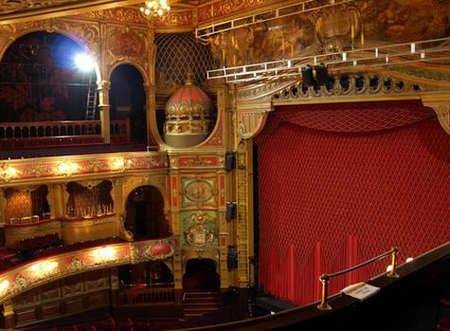
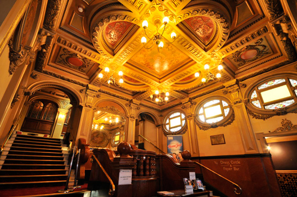
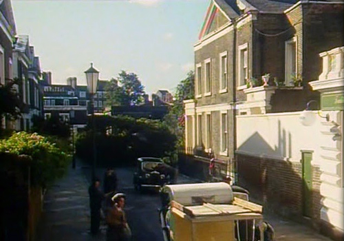
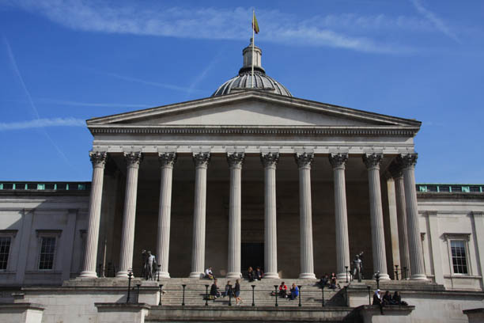
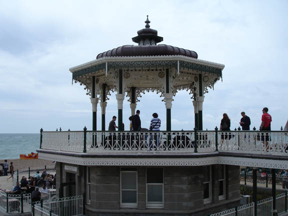

The Hackney Empire is used as the 'Carlton Theatre, Bethnal Green' where George Lorrimer is the Manager. (Also used in 'The Big Four').

Hackney Empire entrance lobby and stairs.

Cumberland Gardens, Clerkenwell, London WC1 - the 'Home of Henry Gascoigne'.

The Wilkins Building, University College London, Gower Street becomes the 'Art College' visited by Poirot & Hastings. (Also seen in 'Hickory, Dickory, Dock' and 'Five Little Pigs').

Brighton Bandstand, West Sussex.